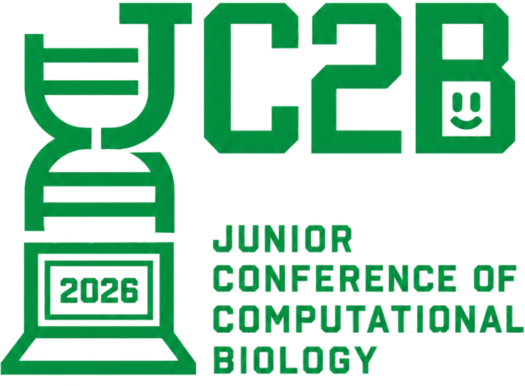

La biologie computationnelle, connectée.
La JC2B est un rendez-vous scientifique consacré à la bioinformatique, aux biostatistiques, à l'intelligence artificielle et aux sciences computationnelles du vivant.

Une conférence. Plusieurs façons d'aborder les données biologiques.
La JC2B réunit des approches quantitatives complémentaires autour des questions biologiques : modélisation statistique, analyse omique, machine learning et workflows computationnels reproductibles.
Qu'est-ce que la JC2B ?
Mission, public et identité scientifique.
↗Thématiques scientifiques
Explorer les domaines de recherche représentés à la JC2B.
↗Programme
Présentations, contributions sélectionnées et structure de la journée.
↗Résumés
Comment soumettre une contribution et où les résumés acceptés seront publiés.
L'inscription et la soumission d'un résumé passent par un seul formulaire.
Chaque participant s'inscrit une seule fois. Le formulaire lui demande ensuite s'il souhaite également soumettre une contribution scientifique.